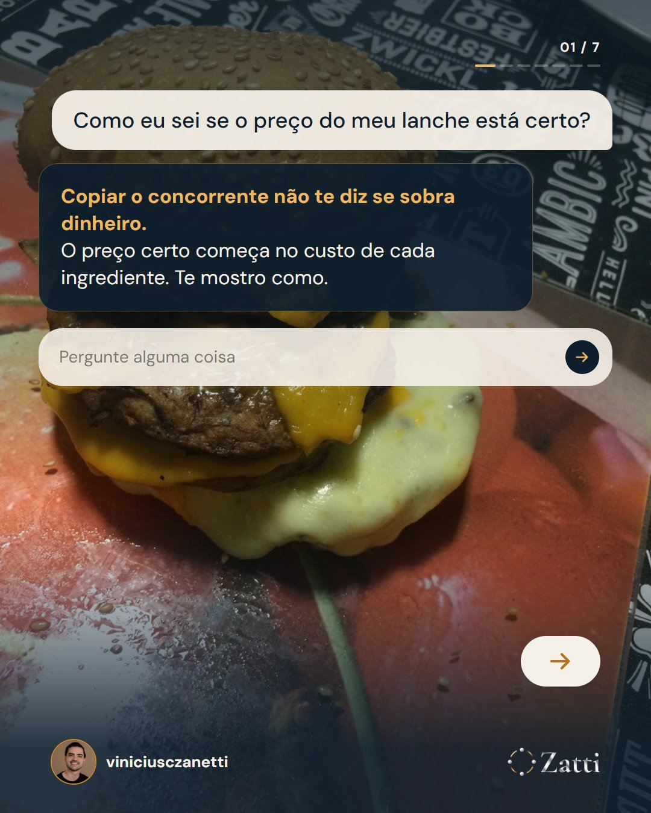

Copiar o preço do concorrente: por que o lanche pode estar dando prejuízo
Muitos donos olham o cardápio da hamburgueria do lado e cobram igual ou um pouco menos. Parece seguro, mas não diz nada sobre o custo do seu lanche. Veja a conta que define o preço certo.
Publicado em 16/11/2026
Na hora de definir o preço do lanche, o caminho mais comum é abrir o cardápio da hamburgueria do lado e cobrar igual, ou um pouco menos para atrair o cliente. Se o concorrente vende àquele preço, a lógica diz que deve funcionar. Para o consultor Vinícius Zanetti, essa lógica tem um furo: o dono copia o preço sem saber quanto o lanche custa para o concorrente, nem para ele mesmo.
Num carrossel publicado no Instagram, ele mostrou por que o preço copiado engana e qual conta o dono deveria fazer antes de definir quanto cobrar.

"Copiar o preço do concorrente parece seguro, mas você não sabe quanto custa o prato dele. Talvez ele também esteja perdendo dinheiro."Vinícius Zanetti, no carrossel sobre o preço do prato
Posso usar o preço do concorrente como referência?
Como referência de mercado, sim. Saber quanto o cliente da região paga por um lanche parecido ajuda a entender o que é caro ou barato para aquele público. Como base de cálculo, não. O preço do concorrente foi definido sobre o custo dele, o aluguel dele, a taxa que ele paga e a margem que ele aceita, e nada disso aparece no cardápio.
O carrossel resume o risco: se o concorrente estiver perdendo dinheiro sem saber, quem copia o preço passa a perder junto. E como o preço foi copiado, ninguém sabe dizer se o lanche dá lucro.
Como calcular o preço de venda de um lanche?
O ponto de partida é o custo do próprio lanche, item por item. É o que o setor chama de ficha técnica. No livro Restaurante no Controle, Vinícius lembra que a Abrasel divide a ficha técnica em duas: a operacional, usada na cozinha para montar o prato, e a gerencial, que traduz o preparo em números e mostra o custo por ingrediente, o custo total, o CMV e a base para a precificação.
"Sem ficha técnica, não existe controle de CMV."Vinícius Zanetti, no livro Restaurante no Controle, no capítulo Estrutura
O carrossel traz a conta em cinco passos, para fazer com o lanche que mais vende:
- Liste cada ingrediente do lanche. Pão, carne, queijo, salada, molho.
- Anote o custo na quantidade que vai nele. Não o preço do quilo, mas o custo dos gramas que vão no lanche.
- Some molho e embalagem. São os itens mais esquecidos, e no delivery a embalagem pesa.
- O total é o custo do prato. Esse é o custo da mercadoria de uma unidade vendida.
- Divida pelo preço e compare com 25% a 33%. O resultado é o CMV do lanche, em percentual do preço.
No segundo passo, o custo precisa considerar a perda no preparo. Carne que encolhe, frango que perde peso no descongelamento e verdura que perde folhas custam mais do que o preço da nota. A matéria sobre fator de correção mostra como fazer essa conta.
Qual o CMV ideal de um lanche?
A referência que a Zatti usa para um CMV saudável fica entre 25% e 33% do preço de venda.
"Pro restaurante sobrar dinheiro no fim do mês, o CMV saudável fica entre 25% e 33% do faturamento."Vinícius Zanetti, no carrossel sobre o preço do prato
A mesma faixa serve para achar o preço quando o custo já é conhecido. Basta fazer a conta ao contrário: o preço é o custo do lanche dividido pelo CMV que se quer atingir. A tabela mostra o que isso significa na prática.
| CMV desejado | Conta | O preço precisa ser |
|---|---|---|
| 25% | custo ÷ 0,25 | 4 vezes o custo do lanche |
| 30% | custo ÷ 0,30 | cerca de 3,3 vezes o custo |
| 33% | custo ÷ 0,33 | cerca de 3 vezes o custo |
Se o preço que o dono pratica hoje fica abaixo de três vezes o custo do lanche, o CMV daquele item passa de 33%. A partir daí cabe uma escolha: rever a receita e as porções, renegociar insumo ou ajustar o preço. O que não dá é continuar sem saber. Quando o problema está no mix e não em um lanche só, a matéria Qual lanche tirar do cardápio mostra como cruzar venda e margem.
Por que restaurante cheio termina o mês no vermelho?
Porque volume não corrige preço errado. Se o lanche que mais vende tem CMV alto demais, cada venda deixa pouco ou nada para pagar o resto das contas. No carrossel, Vinícius chama isso de preço no feeling.
"Se o lanche que mais vende está com preço abaixo do custo, quanto mais você vende, mais dinheiro sai."Vinícius Zanetti, no carrossel sobre o preço do prato
O livro traz a mesma ideia em número. Um desvio de 5 pontos percentuais no CMV, num restaurante que fatura R$ 100 mil por mês, representa R$ 5 mil a menos de resultado todo mês, ou R$ 60 mil por ano. Em muitos casos, escreve ele, essa é a diferença entre um negócio lucrativo e um negócio que sangra.
O preço no delivery deve ser diferente do balcão?
O carrossel faz um alerta: no delivery, a conta muda, porque a taxa da plataforma leva parte do que sobraria para o dono. O CMV do lanche continua o mesmo se o preço for igual, mas o que sobra depois das deduções diminui.
É aí que entra a margem de contribuição. Na DRE que o Vinícius usa, primeiro saem do preço os impostos, as taxas de cartão e as taxas de delivery; depois sai o CMV; o que sobra é a margem de contribuição, que paga a mão de obra, o aluguel e o resto da estrutura. A referência da Zatti é 35% como mínimo, e de 50% a 55% como boa. Por isso o preço do aplicativo precisa ser calculado com as deduções daquele canal, e não copiado do balcão, nem do concorrente. A conta completa, passo a passo, está na matéria Preço igual no iFood e no balcão?.
O que o dono de hamburgueria e pizzaria faz com isso
A proposta da legenda do carrossel é começar pequeno: fazer a conta do item mais vendido ainda nesta semana. Na hamburgueria, é o lanche que mais sai; na pizzaria, o sabor campeão no tamanho mais pedido. Com o custo de um item na mão, o dono descobre se o carro-chefe está ajudando ou atrapalhando o caixa e ganha um método para repetir nos outros.
O concorrente continua sendo útil como termômetro do mercado. Mas a pergunta que define o preço é outra: quanto custa o meu lanche e quanto sobra em cada venda. Depois, para conferir se o CMV do mês inteiro bate com o das fichas, a matéria CMV teórico x CMV real mostra como comparar.
Perguntas frequentes
Posso copiar o preço do concorrente no meu restaurante?
Como referência de mercado, sim; como base de preço, não. O preço do concorrente foi feito sobre o custo, o aluguel e as taxas dele, e ele pode estar perdendo dinheiro sem saber.
Como calcular o preço de venda de um lanche?
Some o custo de cada ingrediente na quantidade usada, com molho e embalagem, e divida pelo CMV desejado. Com CMV de 25%, o preço é 4 vezes o custo; com 33%, cerca de 3 vezes.
Qual o CMV ideal de uma hamburgueria?
A referência da Zatti é de 25% a 33% do preço de venda. Acima disso, o lanche deixa pouco para pagar a estrutura do restaurante.
O preço do delivery deve ser diferente do salão?
O preço do delivery deve ser calculado com as deduções daquele canal, como a taxa da plataforma, porque elas reduzem a margem de contribuição do lanche.
Fontes
- Instagram de Vinícius Zanetti: carrossel sobre como saber se o preço do lanche está certo (outubro de 2026).
- Vinícius Zanetti, Restaurante no Controle: introdução (desvio de 5 pontos no CMV) e capítulo Estrutura (ficha técnica, CMV e DRE gerencial), com referência à Cartilha CMV da Abrasel (2023).